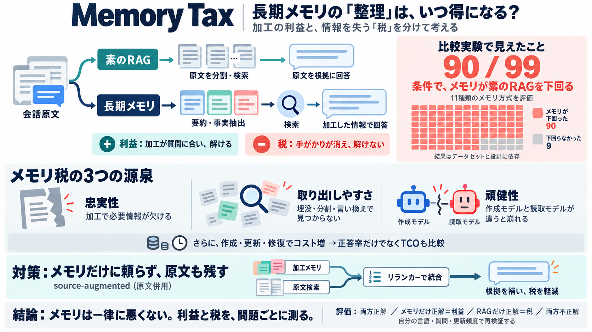

Agent Memory vs Naive RAG: 11 Systems Tested (Memory Tax) | explainx.ai Blog | explainx.ai
Many dedicated agent memory systems score lower than a plain retrieval baseline over the raw chat history, even though t…

Many dedicated agent memory systems score lower than a plain retrieval baseline over the raw chat history, even though t…
As of October 2026, the highest published LongMemEval score is 95.60%, reported by Zero Labs for Agent Zero Memory with …
For the value representation, most of the surveyed systems either directly use the sessions themselves or use a mixture …
Naive RAG (52%) is a simple RAG system which retrieves turns. We mention this to point out that, although we ultimately …
## 5 Experiments We evaluate all methods on LME-V2 under the context gathering formulation. The returned memory context…